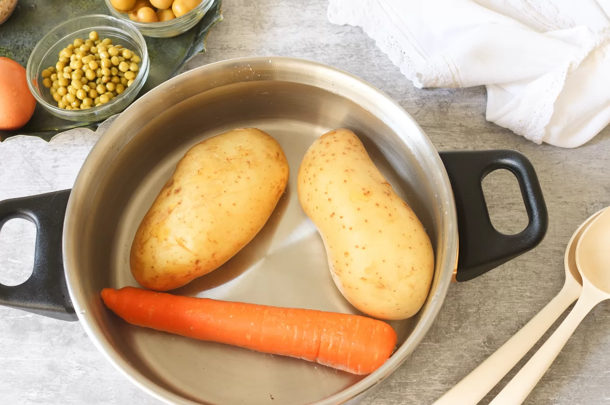

Información de la receta
Tiempo de preparación: 10 minutos
Tiempo de cocinado: 45 minutos
Tiempo total: 55 minutos (más el tiempo de enfriado)
Raciones: 4
Categoría: Aperitivo
Ingredientes
- 2 patatas
- 1 zanahoria
- 1 o 2 huevos
- 50 g de aceitunas
- 150 g de atún en conserva
- 75 g de guisantes en conserva
- 200 g de mayonesa
Cómo hacer la Ensaladilla Rusa
- Lava bien las patatas y la zanahoria y ponlas enteras y con piel en una cazuela con agua. Llévalas a fuego medio y cuécelas durante 30-40 minutos hasta que estén tiernas. 
- Mientras tanto, cuece los huevos durante 10 minutos. Luego pásalos a un cuenco con agua fría y hielo.
- Pela las patatas, la zanahoria y los huevos una vez que se hayan enfriado.
- Corta las patatas, la zanahoria, los huevos y las aceitunas en trozos pequeños.
- Pon todos los ingredientes troceados en un bol: patatas, zanahorias, huevos, aceitunas, atún escurrido y guisantes.
- Añade la mayonesa al bol y mezcla suavemente para integrar todo.
- Refrigera la ensaladilla rusa hasta que esté bien fría antes de servir.